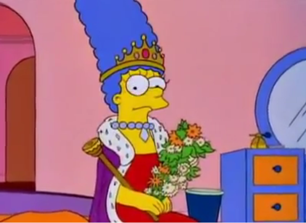
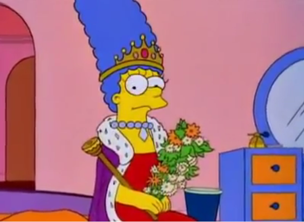

Podcast dedicado a Los Simpsons.
Análisis, referencias culturales, diferencias entre el inglés y el doblaje
latino, curiosidades y demás.
Podcast dedicado a Los Simpsons. Análisis, referencias culturales, diferencias entre el inglés y el doblaje latino, curiosidades y demás.

Los Simpson (en inglés, The Simpsons) es una serie estadounidense de comedia, en formato de animación, creada por Matt Groening para Fox Broadcasting Company y emitida en varios países del mundo. La serie es una sátira de la sociedad estadounidense que narra la vida y el día a día de una familia de clase media de ese país (cuyos miembros son Homer, Marge, Bart, Lisa y Maggie Simpson) que vive en un pueblo ficticio llamado Springfield.
 


DUFF BEER
LUIGI'S PIZZA

KRUSTY BURGER

LARD LAD DONUTS